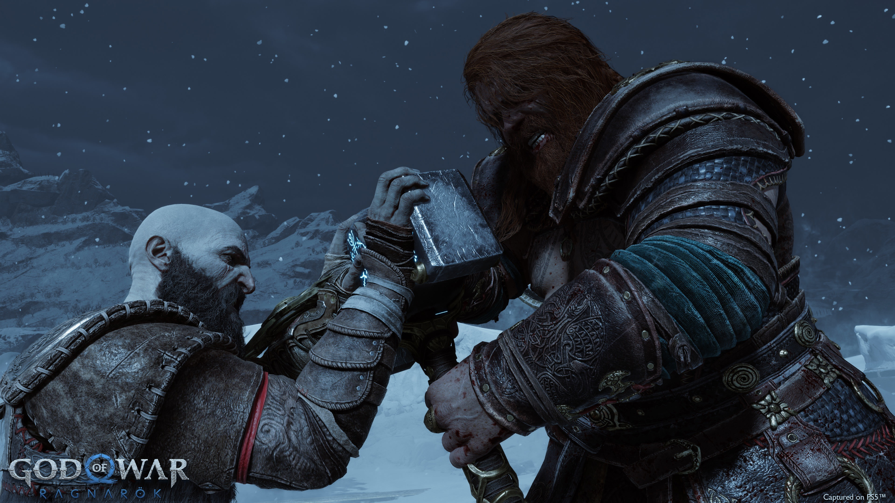
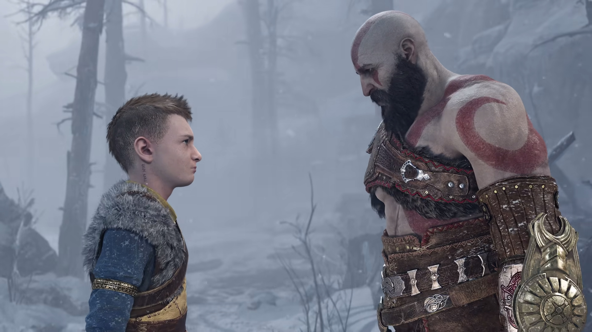

Após os acontecimentos de God of War (2018), Kratos e seu filho Atreus vivem
nos reinos nórdicos enfrentando o rigoroso Fimbulwinter, um inverno
interminável que cobre Midgard com neve, gelo e silêncio. Esse fenômeno não é
apenas uma mudança climática extrema — ele representa o primeiro sinal da
profecia do Ragnarök, o evento cataclísmico que marca o fim da era dos deuses.
Durante esse período, a relação entre pai e filho continua evoluindo.
Kratos tenta proteger Atreus dos perigos do destino e do conflito com os
deuses de Asgard, enquanto o jovem começa a questionar seu próprio papel
nesse mundo. As profecias dos gigantes indicam que Atreus possui um destino
muito maior do que ambos imaginavam.
Enquanto o inverno avança e os reinos entram em colapso gradual, criaturas
míticas se tornam mais agressivas, antigas alianças se desfazem e novos
conflitos surgem. Kratos percebe que, apesar de sua tentativa de evitar o
destino, os eventos que levarão ao Ragnarök parecem inevitáveis.
O Encontro com Thor

Determinados a confrontar Kratos e Atreus pelos eventos que levaram à morte de
Magni e Modi, Thor e Odin finalmente aparecem diante da casa dos protagonistas.
O encontro entre o Deus do Trovão e o Fantasma de Esparta rapidamente se
transforma em uma batalha devastadora que ecoa por todo o reino.
Thor, conhecido por sua força colossal e pelo poder do martelo Mjölnir,
enfrenta Kratos com brutalidade absoluta. Cada golpe troca energia suficiente
para destruir paisagens inteiras, enquanto a luta atravessa florestas,
montanhas e estruturas antigas. O confronto não é apenas físico — ele também
representa o choque entre duas figuras lendárias que carregam passados
marcados por violência e destruição.
Durante a batalha, Thor demonstra uma força comparável à de Kratos, algo
raramente visto por aqueles que enfrentaram o espartano. O combate se torna
um teste de resistência, estratégia e pura força de vontade, estabelecendo
um dos momentos mais memoráveis e intensos de toda a franquia God of War.
O Destino de Atreus

Enquanto os conflitos com os deuses de Asgard se intensificam, Atreus começa a
descobrir mais sobre sua verdadeira identidade. Revelado como Loki pelos
gigantes, o jovem percebe que sua existência está diretamente ligada às
profecias que cercam o Ragnarök.
Dividido entre obedecer às advertências de Kratos ou seguir as pistas deixadas
por seu povo ancestral, Atreus inicia uma jornada de autodescoberta. Ele busca
entender seu papel no equilíbrio entre os reinos e o significado das visões
proféticas que parecem mostrar diferentes caminhos possíveis para o futuro.
Ao longo dessa jornada, Atreus aprende a controlar melhor seus poderes,
enfrenta inimigos formidáveis e faz escolhas que podem alterar o destino de
todos os mundos. Para Kratos, o maior desafio não é apenas lutar contra
deuses ou monstros, mas aceitar que seu filho precisa trilhar seu próprio
caminho, mesmo que isso signifique encarar um destino que nenhum dos dois
pode controlar completamente.